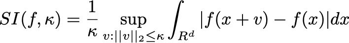
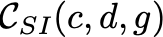

This is the first in a series of paper summaries that I’m going to be writing over the course of the next few months to help me prepare for my PhD program this fall at Columbia. The papers I’ll discuss are all in subfields of machine learning and algorithms that I like: neural network generalization, probability distribution estimation (like this paper!), property testing, and algorithmic fairness. Since this is a way for me to develop my academic reading and writing skills, I would appreciate any feedback that can help me get better.
This week, I read “Density estimation for shift-invariant multidimensional distributions”, which was co-authored by my soon-to-be advisor, Rocco Servedio, along with Anindya De and Philip Long. I assume the reader of this summary is familiar with basic probability and algorithmic concepts like reductions and time complexity. The paper relies extensively on Fourier analysis, but I don’t expect much background there.
Understanding the underlying probability distribution is key for figuring out what’s going on in statistical problems. However, it’s extremely rare for to actually have access to an explicit distribution that tells us exactly how often to expect each outcome. Rather, we might see a sequence of independent samples drawn from the distribution, which we can use to predict which distribution was likely to produce them. This paper does just that: given observed samples from a data source, it proposes an algorithm that estimates a density function, which tells us with what frequency to expect that the random draws take on certain values.
Sometimes, the nature of a problem defines what kind of distribution we can expect, and we only need to predict a few parameters that define the distribution. For instance, we can often assume that we are drawing from a Gaussian, so predicting the distribution requires only estimating its mean and variance. For non-parametric estimation, however, we assume no knowledge of the distribution and need to construct it entirely from scratch. This paper studies non-parametric estimation, with a few broad requirements that the distribution must satisfy.
Non-parametric estimation is not a new problem and there are two approaches that are commonly taught in introductory Machine Learning classes. Both of these methods rely on a simple assumption: If we’ve observed a large number of samples clustered together, then we expect that they are in a “dense” region that has a high probability of having more samples in future draws.
While these methods make intuitive sense and do a good job of producing basic estimations, they are very general methods that work for any continuous probability distributions. In addition, they both require selecting hyperparameters that balance the bias-variance trade-off (grid size for histograms and kernel size and shape for KDE).
This paper explores the specific case of shift-invariant distributions, which have the property that shifting the distribution in a by a short distance does little to affect the the probability of each coordinate. Put rigorously a distribution f’s shift invariance with scale \kappa is defined as . (Note that sup means essentially the same thing as max.) This bounds the total difference between the probability of each location before and after the distribution is shifted by vector v. We then define a set of shift-invariant functions C_SI(c,d,g) to be all d-dimensional distributions f such that SI(f, \kappa) <= c for all values of kappa, whose tails are bounded by some other function g (to keep the bulk of the distribution concentrated in one place). This is a way of formalizing a notion of smoothness, which means the distribution cannot have large changes in probability density for nearby regions. This condition is commonly satisfied for popular continuous distributions such as Gaussians. The authors introduce a method for solving this problem by taking advantage of the structural properties of these kinds of distributions.
The bulk of the paper is devoted to introducing an algorithm that learns shift-invariant distributions and analyzing its precision, likelihood of success, time complexity, and sample complexity (how many samples are needed for the algorithm to run properly). Here is the main result put rigorously as a theorem.
Let’s break this down into pieces and see if we can understand each part:
They use these results to prove a bound for another problem in learning distributions: when the distribution is log-concave. These are common distributions, which include Gaussians, exponential distributions, Laplace distributions, and gamma distributions (for choices of parameters). They show that there is algorithm that correctly estimates log-concave densities with error \epsilon and probability of success 1 - \delta that uses [RUNTIME THM 1] time and [SAMPLES THM 1] samples. This is actually not the most efficient algorithm for learning log-concave distributions in terms of the number of samples needed (that honor belongs to this paper). However, this algorithm has better time complexity, which highlights a trade-off between runtime and number of samples required.
Finally, the authors argue that the algorithm they presented is close to optimal in this domain. They do so by proving that no algorithms can solve this problem with [INFO ABOUT BOUND]. While the presented algorithm is not perfect and has room for improvement, they rule out the existence of an algorithm for the task that is far better than the one here. This result is proven with Fano’s inequality, a key result from information theory. Essentially, they show that with any fewer samples, no algorithm will have enough information to distinguish the correct distribution from a set of sufficiently different imposters with reasonable probability.
There are 3 main steps in how the main algorithm works to estimate some probability distribution p:
The paper is long ([NUM PAGES]), so I don’t plan on covering the entire algorithm and proof here. I will focus on an intuitive discussion of step 2. The other segments are interesting, but step 2 contains the most novel insights produced by the paper, since it relies on exploiting the structure of shift-invariant distributions to obtain tighter bounds than are possible elsewhere.
Regarding Fourier transforms, here’s what you need to know. A Fourier transform converts a function into the frequency domain, which means it decomposes it into a sum of waves. [EXPLICIT FORMULATION OF FT] The values [____] are Fourier coefficients. Because we can convert back into the original function space using an inverse Fourier transform, if we learn the Fourier coefficients, we learn the original function. And that’s how step 2 roughly works — we predict the Fourier coefficients of q and use those to reverse-engineer q. [IMAGE OF FT]
But how do we predict those coefficients if there are an infinite number of them? We transform q using something called a mollifier [LINK], which means we apply additive noise drawn from this distribution [MOLLIFIER DIST]. This has two important effects:
Because each Fourier coefficient of the noisy distribution is an integral over a probability distribution, we can accurately predict the coefficients by drawing from the noisy distribution (which we do by adding a sample from q and a sample from the mollifier). Because the coefficients of frequencies of high magnitude grow exponentially small, we assume all Fourier coefficients with frequencies greater than some magnitude are 0 (we choose that magnitude based on [VARIABLES] to ensure the total error between the predicted distribution and the true distribution is minimal). We estimate the remaining coefficients with the sampling method described at the beginning of the paragraph. With the computed Fourier coefficients, we can obtain q(x) by computing an inverse Fourier transform, which is computationally feasible due to the assumption that all but a few of the coefficients are zero.
Remember that each time we sample from q, we must sample multiple times from p in order to ensure that q is sampled properly. There’s a lot more complication in steps 1 and 3 for stating exactly how to do this while limiting the number of erroneous samples from q. Altogether, the paper is built on this insight regarding the efficient estimation a certain kind of distribution with Fourier analysis, and the rest of it covers how transform more loosely-defined distributions to the given form.
Because this paper falls under the umbrella of Theoretical Computer Science, and because the algorithm’s time and sample complexity are hobbled by a dependence on some very large constants, its results are not likely to produce an immediately practical data science algorithm. This paper is particularly valuable for understanding these kinds of smooth and log-concave distributions, and its insights could inform the creation of more efficient (and less rigorous) algorithms that perform well in practice.